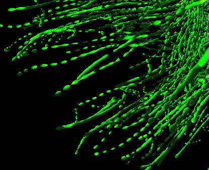

In this paper, we propose a novel method for visualizing high-resolution DTI fibers with merging metaballs. We extend the streamball in flow visualization to tensor merging ellipsoids and place them along integral curves, yielding a sparse 3D density influence field. To represent this sparse influence field, we use perfect spatial hashing method to compress it while retaining efficient data access. The resulting visualization shows that our approach can not only reveal the connectivity information in biological tissue, but also the local tensor details.
